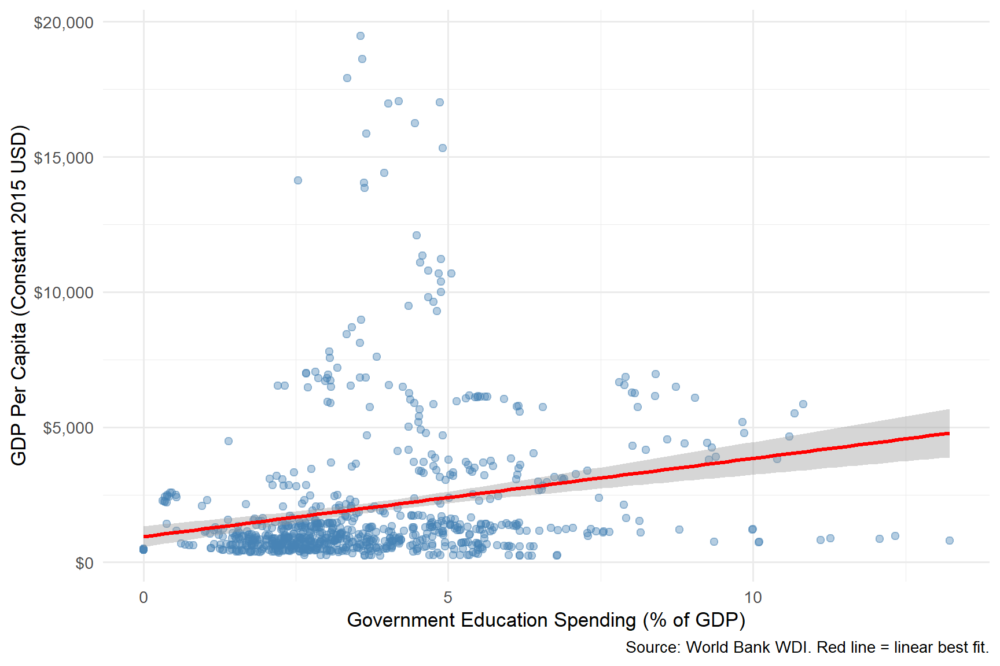
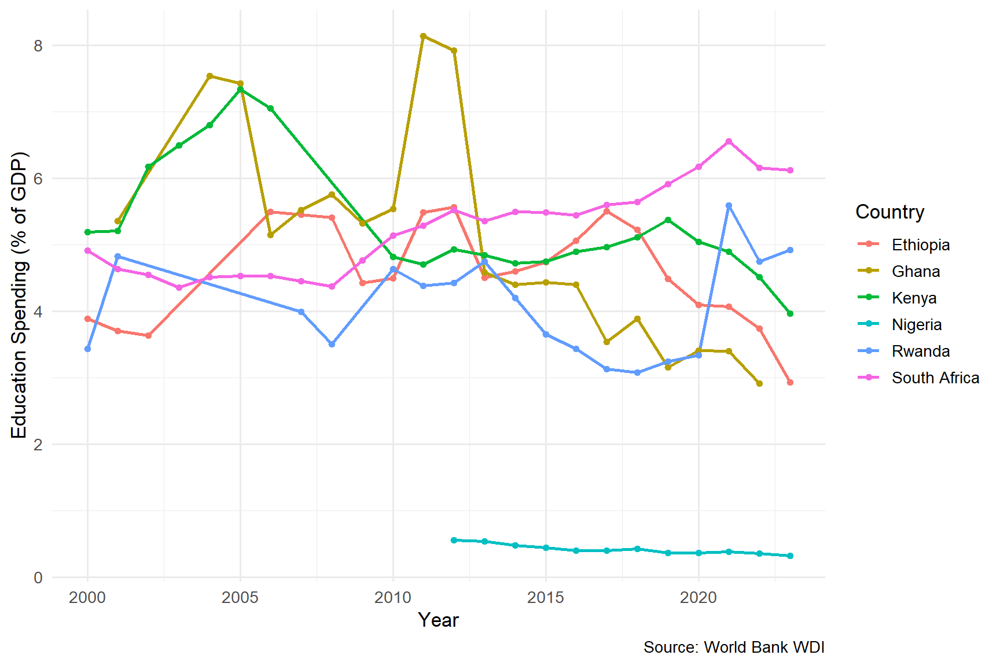
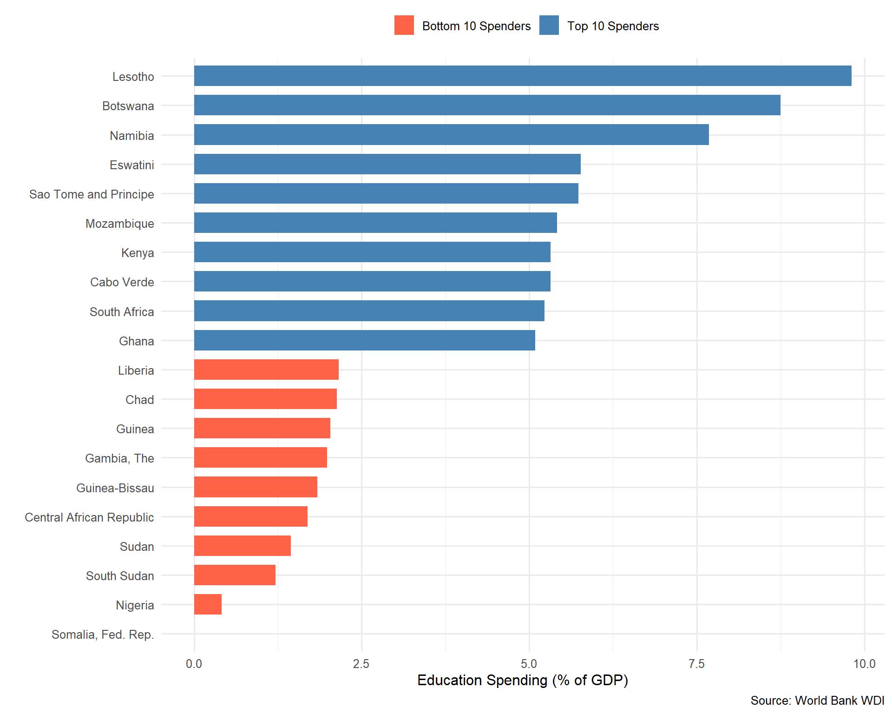

library(tidyverse)
library(scales)
library(broom)
library(knitr)
africa_clean <- read_csv("data/africa_education_gdp_clean.csv",
show_col_types = FALSE)
africa_clean <- africa_clean %>%
mutate(log_gdp = log(gdp_per_capita))Does Education Spending influence GDP in Africa?
1. Introduction
In Africa there is this quote our older generation kept saying while growing up: Education is the key and if you want to develop, invest in education. it shows up in political speeches, World Bank report, classroom debate, and dinner table argument. But the more papers and report i read, the more I notice that the slogan rarely comes with numbers attached. so I wanted to look at the data myself.
This project asks a deliberately simple question: across Sub-Saharan Africa, do countries that spend a larger share of their GDP on education tend to be richer? I am not trying to prove that education causes growth, that is a much harder problem, and one I am not equipped to solve at this stage. What I can do is describe the relationship honestly, see what the data actually looks like, and be clear about what my analysis can and cannot say and that is by using data from the World Bank’s World Development Indicators (WDI) database, covering the period 2000 to 2023.
Research Question: Do African countries that invest a larger share of their GDP in education tend to have higher GDP per capita?
Why This Matters: Many African governments face difficult budget decisions. Understanding whether education spending is associated with economic prosperity can inform policy priorities. While this analysis cannot prove that education spending causes growth (correlation is not causation), it provides an important descriptive foundation.
2. Data and Methodology
2.1 Data Source
I used the World Bank’s World Development Indicators (WDI), pulled directly into R with the WDI package. Two indicators do the heavy lifting:
- GDP per capita in constant 2015 US$ (
NY.GDP.PCAP.KD) - Government expenditure on education as a percentage of GDP (
SE.XPD.TOTL.GD.ZS)
I restricted the sample to Sub-Saharan African countries between 2000 and 2023.
2.2 Data Preparation
After filtering for Sub-Saharan African countries and removing observations with missing values, the final dataset contains 809 observations across 47 countries.
2.3 Summary Statistics
summary_table <- africa_clean %>%
summarize(
`GDP Per Capita (Mean)` = round(mean(gdp_per_capita), 0),
`GDP Per Capita (Median)` = round(median(gdp_per_capita), 0),
`GDP Per Capita (Min)` = round(min(gdp_per_capita), 0),
`GDP Per Capita (Max)` = round(max(gdp_per_capita), 0),
`Edu Spending % (Mean)` = round(mean(edu_spending_pct), 2),
`Edu Spending % (Median)` = round(median(edu_spending_pct), 2),
`Edu Spending % (Min)` = round(min(edu_spending_pct), 2),
`Edu Spending % (Max)` = round(max(edu_spending_pct), 2)
) %>%
pivot_longer(everything(), names_to = "Statistic", values_to = "Value")
kable(summary_table, caption = "Table 1: Summary Statistics")| Statistic | Value |
|---|---|
| GDP Per Capita (Mean) | 2039.00 |
| GDP Per Capita (Median) | 1047.00 |
| GDP Per Capita (Min) | 248.00 |
| GDP Per Capita (Max) | 19482.00 |
| Edu Spending % (Mean) | 3.75 |
| Edu Spending % (Median) | 3.28 |
| Edu Spending % (Min) | 0.00 |
| Edu Spending % (Max) | 13.22 |
3. Results
3.1 The Core Relationship: Education Spending vs. GDP
ggplot(africa_clean, aes(x = edu_spending_pct, y = gdp_per_capita)) +
geom_point(alpha = 0.4, color = "steelblue", size = 2) +
geom_smooth(method = "lm", color = "red", se = TRUE) +
scale_y_continuous(labels = dollar_format()) +
labs(
x = "Government Education Spending (% of GDP)",
y = "GDP Per Capita (Constant 2015 USD)",
caption = "Source: World Bank WDI. Red line = linear best fit."
) +
theme_minimal(base_size = 13)`geom_smooth()` using formula = 'y ~ x'
Figure 1 plots government education spending (as a share of GDP) against real GDP per capita for Sub-Saharan African country-years drawn from the World Bank WDI. The fitted OLS line indicates a positive association, with the grey band representing the 95% confidence interval around the conditional mean.
When I first ran this plot I expected a tidy upward slope. What I got was messier a cloud of points with a faint trend line passing through it. There clearly is some relationship, but the variation around the line is huge. Two countries with the same education spending share can have very different GDP per capita levels.
3.2 Spending Patterns Over Time
selected <- c("Nigeria", "South Africa", "Kenya", "Ghana", "Ethiopia", "Rwanda")
africa_clean %>%
filter(country %in% selected) %>%
ggplot(aes(x = year, y = edu_spending_pct, color = country)) +
geom_line(linewidth = 1) +
geom_point(size = 1.5) +
labs(
x = "Year",
y = "Education Spending (% of GDP)",
color = "Country",
caption = "Source: World Bank WDI"
) +
theme_minimal(base_size = 13)
I picked these six countries because they span a useful range, a regional giant (Nigeria), a middle-income outlier (South Africa), strong East African performers (Kenya, Rwanda, Ethiopia), and a stable West African case (Ghana). What this chart makes clear is that education spending is not stable over time within a country. Some countries swing by several percentage points across the period, which complicates any neat story about “high-spending” versus “low-spending” countries.
3.3 Top and Bottom Spenders
country_avgs <- africa_clean %>%
group_by(country) %>%
summarize(
avg_edu = mean(edu_spending_pct, na.rm = TRUE),
avg_gdp = mean(gdp_per_capita, na.rm = TRUE)
)
top10 <- country_avgs %>% arrange(desc(avg_edu)) %>% head(10) %>%
mutate(group = "Top 10 Spenders")
bottom10 <- country_avgs %>% arrange(avg_edu) %>% head(10) %>%
mutate(group = "Bottom 10 Spenders")
bind_rows(top10, bottom10) %>%
ggplot(aes(x = reorder(country, avg_edu), y = avg_edu, fill = group)) +
geom_col(width = 0.7) +
coord_flip() +
scale_fill_manual(values = c("Top 10 Spenders" = "steelblue",
"Bottom 10 Spenders" = "tomato")) +
labs(x = "", y = "Education Spending (% of GDP)", fill = "",
caption = "Source: World Bank WDI") +
theme_minimal(base_size = 12) +
theme(legend.position = "top")
Figure 3 ranks Sub-Saharan African countries by their average government education spending as a share of GDP between 2000 and 2023. Southern African economies dominate the upper tail (Lesotho, Botswana, Namibia, Eswatini all exceed 5.5%), while conflict-affected and fragile states cluster in the lower tail (Somalia, Nigeria, South Sudan, Sudan, CAR).
This was the chart that surprised me most. I expected the top spenders to be obviously richer than the bottom ones. Instead, both groups contain a mix of low and middle-income countries. Some of the highest spenders (as a share of GDP) are countries with relatively small economies, partly because spending as a share is a ratio, and a small denominator can flatter the numerator. That is a useful reminder: the variable I am measuring is not “how much money is going into schools,” it’s “how much relative effort the government is making.” Those are different things.
3.4 Regression Results
model1 <- lm(gdp_per_capita ~ edu_spending_pct, data = africa_clean)
model3 <- lm(log_gdp ~ edu_spending_pct, data = africa_clean)
kable(tidy(model1, conf.int = TRUE) %>%
mutate(across(where(is.numeric), ~round(., 3))),
caption = "Table 2: Simple Regression — GDP Per Capita on Education Spending")| term | estimate | std.error | statistic | p.value | conf.low | conf.high |
|---|---|---|---|---|---|---|
| (Intercept) | 951.166 | 199.574 | 4.766 | 0 | 559.420 | 1342.911 |
| edu_spending_pct | 289.723 | 47.000 | 6.164 | 0 | 197.467 | 381.979 |
kable(tidy(model3, conf.int = TRUE) %>%
mutate(across(where(is.numeric), ~round(., 4))),
caption = "Table 3: Log-Level Regression — Log(GDP Per Capita) on Education Spending")| term | estimate | std.error | statistic | p.value | conf.low | conf.high |
|---|---|---|---|---|---|---|
| (Intercept) | 6.6484 | 0.0653 | 101.7689 | 0 | 6.5201 | 6.7766 |
| edu_spending_pct | 0.1278 | 0.0154 | 8.3088 | 0 | 0.0976 | 0.1580 |
r_sq <- summary(model1)$r.squaredThe simple linear model in Table 2 explains roughly 4.5% of the variation in GDP per capita. That is not a lot. Education spending alone is clearly not the main thing driving why some countries in this sample are richer than others and frankly, I would be suspicious of any analysis that claimed otherwise.
The log-level specification in Table 3 is there because the relationship between income and most policy variables tends to be multiplicative rather than additive. Working in log GDP also tames the influence of the very richest country-years on the line.
4. Discussion
What the results show
The scatter plot and regression analysis reveal that there is a positive association between education spending shares and GDP per capita in this sample, but it is weak, noisy, and very far from sufficient on its own to support any strong policy claim. A country that spends more on education is, on average, slightly richer in this dataset but the cloud of points around the line is so wide that I can easily find pairs of countries that contradict the average story.
What I find more interesting than the headline coefficient is the unexplained variation. Roughly nine-tenths of the differences in GDP per capita across these country years has nothing to do with education spending shares.
In all, the main key findings was:
- The regression coefficient tells us the estimated change in GDP per capita for each 1 percentage point increase in education spending as a share of GDP.
- The R-squared value indicates how much of the variation in GDP is captured by education spending alone.
- The comparison of top and bottom spenders shows whether higher-spending countries tend to be richer.
Important Limitations
This analysis has significant limitations that must be acknowledged:
Correlation is not causation. Even if education spending and GDP are positively correlated, we cannot conclude that spending caused GDP to rise. Richer countries might simply afford to spend more on education (reverse causality). That is, if a country gets richer, it can afford to spend more on education in absolute terms and sometimes as a share of GDP too. So even a clean positive coefficient does not tell me which direction the arrow is pointing. The richer causes more spending story fits the data just as well as the spending causes richer story.
Omitted variables. Many factors affect GDP such as natural resources, governance quality, geography, trade, conflict, institutions. Our simple model does not account for most of these. Therefore, any one of them could be doing the work I am attributing to education spending.
Time lags. Education spending today might take 10 to 20 years to affect GDP (children need to grow up and enter the workforce). This model does not capture this lag. For example, if I spend on primary education today, the kids in those classrooms enter the labor force in fifteen to twenty years. A contemporaneous regression cannot see that. The right specification would lag the spending variable, probably by a lot and I haven’t done that here.
Data quality. Education spending data is reported inconsistently across African countries. Some countries have many missing years. The countries with the worst data are often the ones experiencing conflict or fiscal stress, which are exactly the cases that would be most informative. By dropping them, I have almost certainly biased the sample toward the more stable countries.
The variable I’m using is a ratio, not a quantity. A country spending 6% of a small GDP is putting much less money into schools than a country spending 4% of a large GDP. So “education spending as a share of GDP” is really a measure of effort or priority, not of resources delivered to students. These are not the same thing, and conflating them is a real risk.
An advanced analysis:
The advance analysis would address these limitations by using panel data methods (fixed effects to control for country specific factors), instrumental variables (to address reverse causality), and lagged variables (to account for time delays).
5. Conclusion
The data shows a weak positive association between government education spending and GDP per capita across Sub-Saharan Africa from 2000 to 2023. That is not a finding I would defend in a policy meeting. What I would defend is the discipline of the exercise: pulling real data, looking at it honestly, running a basic model, and being explicit about where the analysis runs out of road.
6. References
- World Bank. (2025). World Development Indicators. https://data.worldbank.org/
- Wickham, H., Çetinkaya-Rundel, M., & Grolemund, G. (2023). R for Data Science (2nd ed.). https://r4ds.hadley.nz/
- Stock, J. H., & Watson, M. W. (2020). Introduction to Econometrics (4th ed.). Pearson.